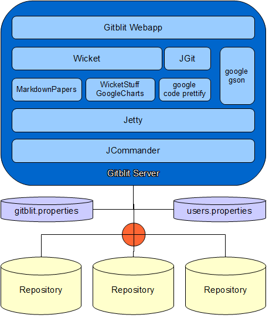

Design Principles
- Keep It Simple, Stupid
- Offer useful features for serving Git repositories. If feature is complex, refer to #1.
- All dependencies must be retrievable from a publicly accessible Maven repository.
This is to ensure authenticity of dependencies and to automate the setup of developer environments.
Architecture

Bundled Dependencies
The following dependencies are bundled with Gitblit.
Downloaded Dependencies
The following dependencies are automatically downloaded by Gitblit GO (or already bundled with the WAR) from the Apache Maven repository and from the Eclipse Maven repository when Gitblit is launched for the first time.
Other Build Dependencies
Building from Source
Eclipse is recommended for development as the project settings are preconfigured.
Additionally, Google CodePro AnalytiX, eclipse-cs, FindBugs, and EclEmma are recommended development tools.
- Clone the git repository from Github.
- Import the gitblit project into your Eclipse workspace.
There will be lots of build errors.
- Using Ant, execute the
build.xml script in the project root.
This will download all necessary build dependencies and will also generate the Keys class for accessing settings.
- Select your gitblit project root and Refresh the project, this should correct all build problems.
- Using JUnit, execute the
com.gitblit.tests.GitBlitSuite test suite.
This will clone some repositories from the web and run through the unit tests.
- Execute the com.gitblit.GitBlitServer class to start Gitblit.
Contributing
Pull requests are preferred. Patches are welcome.
Contributions must be your own original work and must licensed under the Apache License, Version 2.0, the same license used by Gitblit.